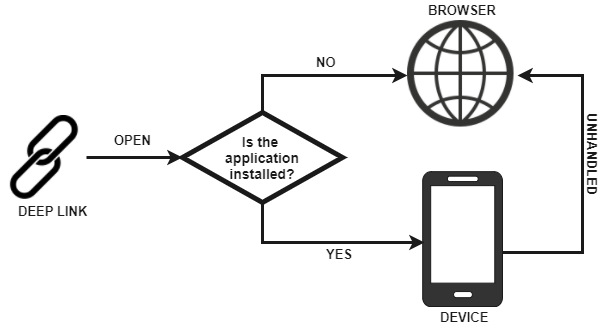

A Deep Link consists in a URI under our domain that links certain content on the web (e.g., a store product) which can be handled by a native mobile application for processing that information. This means that the end user can open a web link with a mobile application instead of the web client application in the browser.  This article describes the mechanisms provided by GeneXus for adding deep linking on your Smart Device application. Preliminary settingsClient-side settingsIn the Smart Devices Main object the developer must set the Deep Link Base URL property to indicate which Base URLs should be handled by the application when the device triggers them. Server-side settings for Android applicationsThe server-side setting for Android applications is optional. If server-side has not been set, the Android OS is responsible for displaying the options that allow the end user to open the requested URI (if there is more than one option). If the developer sets the server-side option by copying the following generated JSON file to the server root (Statement test might be useful for checking grant permissions), every URI that can be handled will be opened instantly by the application. <model>/<environment>/mobile/Android/<main_object_name>/assetlinks.json
Server-side settings for iOS applicationsThe server-side setting for iOS applications is mandatory. To manage deep linking on iOS devices, you must include a special file in the server root for ensuring the authority of the domain (brench aasa-validator might be helpful for testing server settings). This file is automatically generated by GeneXus in the following directory. <model>/<environment>/mobile/iOS/<main_object_name>/apple-app-site-association/<domain>
The <domain> varies depending on Deep Link Base URL property values. The developer must copy this file manually to the server root and ensure that the server accepts empty file extension request as json (see the table below). After server resetting, the file then should be accessed via HTTP, without redirects, at https://<host>/apple-app-site-association.
To generate the file, the Development Team ID property must be set; otherwise, the following warning will be displayed while building. Handling methodologyThere are two mechanisms for handling deep links in the application. When none of them can handle the URI request, the end user will be able to see the content in a web browser. 1. AutomaticThere is a set of interactive objects in the Knowledge Base responsible for displaying content for the resources requested in the URI. For example, suppose that we have a WorkWithDevices object applied to the Products transaction. The Detail node of this object will be associated with the URI http://www.mystore.com/viewproduct.aspx?1. To achieve this, the developer must set the Deep Link Name property on the Detail node with 'viewproduct.aspx' value (name of the requested resource). As we already know, the Detail node will have a parm rule for indicating the ProductId to be displayed. This parm will be automatically caught from the URI's query (in the example, ProductId will be 1). 2. ManualThe DeepLink external object allows the developer to define an event for handling, parsing and redirecting the caught URIs to their corresponding interactive object. The event code and its behavior are the responsibility of the developer. Input parametersDeep link parameters (input parameters of handler panel) can be managed in two ways. 1. PositionedParameter values are sorted in the same order as they appear in the parm rule and are separated by commas (","). http://www.mystore.com/categorysearch.aspx?17,grey+beanie
2. NominatedParameters can be displayed unsorted in the URI, but they have to be named (as a key=value pair, where the key is the parameter name) and separated by an ampersand (&). http://www.mystore.com/categorysearch.aspx?SearchedText=grey+beanie,CateogyId=17
Usage exampleSuppose that we have a simple e-commerce website already designed and we want to develop the mobile application. We start by creating the sibling Smart Device objects from Web objects as follows: • MyStore object (main panel). People now share content using its URL on the web (e.g., by email, messaging systems, social networks, etc.). For this reason, when the mobile application is installed on the end user's device, they should be able to view this content from the native application instead of opening it in the browser. To achieve this, we have to map which interactive Smart Device object will display the content displayed on each interactive Web object. From our design, these objects have the same name on different packages. The first step is to set, in the MyStore object for the Smart Device, the following property for handling deep links:
Next, we have to set which panel will handle each resource.
As we mentioned before, with these settings we are managing automatic deep linking. If for some reason we have to manage them manually, refer to DeepLin.Handle event example. Finally, the behavior achieved is as follows: Notes
FAQ & Troubleshooting
Scope
AvailabilityThe deep linking feature is available as of GeneXus 15 Upgrade 6. See also
|
| Backlinks | ||
| Deep Link Base URL property | Deep Link Name property | DeepLink external object |
| Deferred Deep Linking by Facebook | ||
| Interop external object |